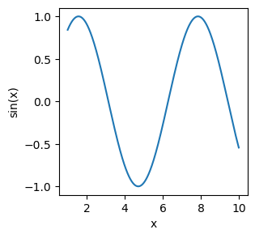

Julia crash course#
Author: Adam Wheeler (CCA, 2025)
[1]:
using LinearAlgebra, Random
just-in-time compilation and performance#
[2]:
a = rand(1000000)
[2]:
1000000-element Vector{Float64}:
0.39658441613857087
0.9712990376176485
0.3640820692462131
0.15833243639573436
0.13789967843953477
0.8126877324433185
0.6255925583176946
0.261250131611379
0.3961797624393626
0.07959753674942904
0.003208672519990352
0.8478061095373812
0.2309652786280153
⋮
0.037575236915737054
0.2557521954875993
0.9757491759048605
0.401937809185246
0.2903137719002181
0.45308050453029947
0.7631583814576202
0.2365987628990316
0.45277430378870265
0.7592706489557343
0.10123392126228281
0.9600805438528993
[3]:
@time sum(a)
0.026410 seconds (57.86 k allocations: 2.920 MiB, 98.55% compilation time)
[3]:
499882.8253191584
[4]:
function mysum(a)
s = 0.0
for x in a
s += x
end
s
end
[4]:
mysum (generic function with 1 method)
[5]:
@time mysum(a)
0.010250 seconds (3.80 k allocations: 194.516 KiB, 90.32% compilation time)
[5]:
499882.82531916565
multiple dispatch#
[6]:
# Define a single function with multiple methods
function process(x)
# "$" is for string interpolation
println("Default method: argument is of type $(typeof(x))")
end
# Add specialized methods for different types
function process(x::Int)
println("Integer method: $x squared is $(x^2)")
end
# this is also a valid way to write a function
process(x::String) = println("String method: $(length(x)) characters, uppercase: $(uppercase(x))")
function process(x::Array)
# TODO Print the length and sum.
end
[6]:
process (generic function with 4 methods)
[7]:
# try these out!
Custom type + multiple dispatch#
[8]:
# Define a simple complex number type
# don't actually do this! There's a built-in one.
struct MyComplex
real_component::Float64
imag_component::Float64
end
# Nice string representation
function Base.show(io::IO, z::MyComplex)
if z.imag_component >= 0
print(io, "$(z.real_component) + $(z.imag_component)i")
else
print(io, "$(z.real_component) - $(abs(z.imag_component))i")
end
end
[9]:
# try creating a MyComplex
MyComplex(1, 2)
[9]:
1.0 + 2.0i
[10]:
# define a couple arithmetic operations
# we have to import these to override them
import Base: +, *
function +(a::MyComplex, b::MyComplex)
MyComplex(a.real_component + b.real_component, a.imag_component + b.imag_component)
end
# "Real" is an abstract type that includes floats, rationals, etc.
+(a::MyComplex, b::Real) = MyComplex(a.real_component + b, a.imag_component)
+(a::Real, b::MyComplex) = b + a
function *(a::MyComplex, b::MyComplex)
real_part = a.real_component * b.real_component - a.imag_component * b.imag_component
imag_part = a.real_component * b.imag_component + a.imag_component * b.real_component
MyComplex(real_part, imag_part)
end
*(a::MyComplex, b::Real) = MyComplex(a.real_component * b, a.imag_component * b)
*(a::Real, b::MyComplex) = b * a
;
[11]:
# try it out
z1 = MyComplex(3.0, 4.0)
z2 = MyComplex(1.0, 2.0)
r = 2.0
z1 + r
[11]:
5.0 + 4.0i
[12]:
# this is a silly example, but this is really powerful for, e.g. dual numbers, unitful types, etc.
basic linear algebra and broadcasting (“vectorization”)#
[13]:
# Define matrices and vectors with clean syntax
A = [1 2
3 4]
B = [5 6; 7 8] # 2×2 matrix
v = [1, 2] # column vector
w = [3, 4]' # row vector
;
[14]:
A
[14]:
2×2 Matrix{Int64}:
1 2
3 4
[15]:
A' # adjoint (~transpose)
[15]:
2×2 adjoint(::Matrix{Int64}) with eltype Int64:
1 3
2 4
[16]:
# matrix addition
A + B
[16]:
2×2 Matrix{Int64}:
6 8
10 12
[17]:
# matrix multiplication
A * v
[17]:
2-element Vector{Int64}:
5
11
[18]:
# try w A v
[19]:
A^2 # matrix power
[19]:
2×2 Matrix{Int64}:
7 10
15 22
[20]:
# if we want to add v to each column, this doesn't work, use .+ instead
# "." is special broadcasting syntax
A + v
DimensionMismatch: a has size (2, 2), mismatch at dim 2
Stacktrace:
[1] throw_promote_shape_mismatch(a::Tuple{Base.OneTo{Int64}, Base.OneTo{Int64}}, b::Nothing, i::Int64)
@ Base ./indices.jl:135
[2] promote_shape
@ ./indices.jl:199 [inlined]
[3] promote_shape
@ ./indices.jl:188 [inlined]
[4] +(A::Matrix{Int64}, Bs::Vector{Int64})
@ Base ./arraymath.jl:14
[5] top-level scope
@ In[20]:4
[21]:
# try adding w to each row
[22]:
# apply any function element-wise
sin.(A)
[22]:
2×2 Matrix{Float64}:
0.841471 0.909297
0.14112 -0.756802
[23]:
# the @. macro broadcasts every operation
@. sin(w) + A + v
[23]:
2×2 Matrix{Float64}:
2.14112 2.2432
5.14112 5.2432
[24]:
eigen(A)
[24]:
Eigen{Float64, Float64, Matrix{Float64}, Vector{Float64}}
values:
2-element Vector{Float64}:
-0.3722813232690143
5.372281323269014
vectors:
2×2 Matrix{Float64}:
-0.824565 -0.415974
0.565767 -0.909377
[25]:
# compute A⁻¹ v
x = A \ v
[25]:
2-element Vector{Float64}:
0.0
0.5
[26]:
A * x
[26]:
2-element Vector{Float64}:
1.0
2.0
PythonPlot#
[27]:
# I don't recommend doing this on Google colab
using Pkg
Pkg.add("PythonPlot")
using PythonPlot
Updating registry at `~/.julia/registries/General.toml`
Resolving package versions...
Installed MicroMamba ────────────────── v0.1.14
Installed DataAPI ───────────────────── v1.16.0
Installed Tables ────────────────────── v1.12.1
Installed TableTraits ───────────────── v1.0.1
Installed ColorTypes ────────────────── v0.12.1
Installed Scratch ───────────────────── v1.3.0
Installed JSON3 ─────────────────────── v1.14.3
Installed PythonCall ────────────────── v0.9.28
Installed FixedPointNumbers ─────────── v0.8.5
Installed micromamba_jll ────────────── v1.5.12+0
Installed DataValueInterfaces ───────── v1.0.0
Installed Pidfile ───────────────────── v1.3.0
Installed IteratorInterfaceExtensions ─ v1.0.0
Installed OrderedCollections ────────── v1.8.1
Installed LaTeXStrings ──────────────── v1.4.0
Installed Reexport ──────────────────── v1.2.2
Installed Statistics ────────────────── v1.11.1
Installed MacroTools ────────────────── v0.5.16
Installed pixi_jll ──────────────────── v0.41.3+0
Installed UnsafePointers ────────────── v1.0.0
Installed StructTypes ───────────────── v1.11.0
Installed CondaPkg ──────────────────── v0.2.33
Installed Colors ────────────────────── v0.13.1
Installed PythonPlot ────────────────── v1.0.6
Updating `~/.julia/environments/v1.11/Project.toml`
[274fc56d] + PythonPlot v1.0.6
Updating `~/.julia/environments/v1.11/Manifest.toml`
[3da002f7] + ColorTypes v0.12.1
[5ae59095] + Colors v0.13.1
[992eb4ea] + CondaPkg v0.2.33
[9a962f9c] + DataAPI v1.16.0
[e2d170a0] + DataValueInterfaces v1.0.0
[53c48c17] + FixedPointNumbers v0.8.5
[82899510] + IteratorInterfaceExtensions v1.0.0
[0f8b85d8] + JSON3 v1.14.3
[b964fa9f] + LaTeXStrings v1.4.0
[1914dd2f] + MacroTools v0.5.16
[0b3b1443] + MicroMamba v0.1.14
[bac558e1] + OrderedCollections v1.8.1
[fa939f87] + Pidfile v1.3.0
[6099a3de] + PythonCall v0.9.28
[274fc56d] + PythonPlot v1.0.6
[189a3867] + Reexport v1.2.2
[6c6a2e73] + Scratch v1.3.0
[10745b16] + Statistics v1.11.1
[856f2bd8] + StructTypes v1.11.0
[3783bdb8] + TableTraits v1.0.1
[bd369af6] + Tables v1.12.1
[e17b2a0c] + UnsafePointers v1.0.0
⌅ [f8abcde7] + micromamba_jll v1.5.12+0
[4d7b5844] + pixi_jll v0.41.3+0
[4af54fe1] + LazyArtifacts v1.11.0
[37e2e46d] + LinearAlgebra v1.11.0
[9e88b42a] + Serialization v1.11.0
[8dfed614] + Test v1.11.0
[e66e0078] + CompilerSupportLibraries_jll v1.1.1+0
[4536629a] + OpenBLAS_jll v0.3.27+1
[8e850b90] + libblastrampoline_jll v5.11.0+0
Info Packages marked with ⌅ have new versions available but compatibility constraints restrict them from upgrading. To see why use `status --outdated -m`
Precompiling project...
377.2 ms ✓ Reexport
431.9 ms ✓ DataValueInterfaces
672.2 ms ✓ LaTeXStrings
872.3 ms ✓ OrderedCollections
764.5 ms ✓ Statistics
467.8 ms ✓ UnsafePointers
467.6 ms ✓ IteratorInterfaceExtensions
561.2 ms ✓ DataAPI
546.9 ms ✓ Pidfile
831.6 ms ✓ Scratch
1076.5 ms ✓ StructTypes
558.2 ms ✓ TableTraits
1667.1 ms ✓ micromamba_jll
1920.7 ms ✓ pixi_jll
1470.7 ms ✓ Tables
4233.4 ms ✓ MacroTools
3870.0 ms ✓ FixedPointNumbers
3646.3 ms ✓ MicroMamba
1678.3 ms ✓ ColorTypes
701.6 ms ✓ ColorTypes → StyledStringsExt
9735.6 ms ✓ JSON3
5574.8 ms ✓ Colors
4385.1 ms ✓ CondaPkg
13381.2 ms ✓ PythonCall
PythonCallExt Waiting for background task / IO / timer.
[pid 3666] waiting for IO to finish:
Handle type uv_handle_t->data
timer 0x21ddda20->0x7fcfefcf18a0
This means that a package has started a background task or event source that has not finished running. For precompilation to complete successfully, the event source needs to be closed explicitly. See the developer documentation on fixing precompilation hangs for more help.
16411.4 ms ✓ PythonPlot
25919.1 ms ✓ IJulia → PythonCallExt
26 dependencies successfully precompiled in 57 seconds. 43 already precompiled.
4 dependencies had output during precompilation:
┌ MicroMamba
│ Downloading artifact: micromamba
└
┌ IJulia → PythonCallExt
│ ┌ Info: CondaPkg: Waiting for lock to be freed. You may delete this file if no other process is resolving.
│ └ lock_file = "/home/runner/.julia/environments/v1.11/.CondaPkg/lock"
│
│ [pid 3666] waiting for IO to finish:
│ Handle type uv_handle_t->data
│ timer 0x21ddda20->0x7fcfefcf18a0
│ This means that a package has started a background task or event source that has not finished running. For precompilation to complete successfully, the event source needs to be closed explicitly. See the developer documentation on fixing precompilation hangs for more help.
└
┌ CondaPkg
│ Downloading artifact: pixi
└
┌ PythonPlot
│ CondaPkg Found dependencies: /home/runner/.julia/packages/PythonPlot/oS8x4/CondaPkg.toml
│ CondaPkg Found dependencies: /home/runner/.julia/packages/PythonCall/mkWc2/CondaPkg.toml
│ CondaPkg Found dependencies: /home/runner/.julia/packages/IJulia/xpifh/CondaPkg.toml
│ CondaPkg Found dependencies: /home/runner/.julia/packages/CondaPkg/0UqYV/CondaPkg.toml
│ CondaPkg Resolving changes
│ + comm
│ + ipympl
│ + ipython
│ + ipywidgets
│ + jupyter_client
│ + jupyter_kernel_test
│ + libstdcxx
│ + libstdcxx-ng
│ + matplotlib
│ + python
│ CondaPkg Initialising pixi
│ │ /home/runner/.julia/artifacts/cefba4912c2b400756d043a2563ef77a0088866b/bin/pixi
│ │ init
│ │ --format pixi
│ └ /home/runner/.julia/environments/v1.11/.CondaPkg
│ ✔ Created /home/runner/.julia/environments/v1.11/.CondaPkg/pixi.toml
│ CondaPkg Wrote /home/runner/.julia/environments/v1.11/.CondaPkg/pixi.toml
│ │ [dependencies]
│ │ ipython = "*"
│ │ jupyter_kernel_test = "*"
│ │ libstdcxx = ">=3.4,<15.0"
│ │ ipywidgets = "*"
│ │ libstdcxx-ng = ">=3.4,<15.0"
│ │ matplotlib = ">=1"
│ │ jupyter_client = "*"
│ │ ipympl = "*"
│ │ comm = "*"
│ │
│ │ [dependencies.python]
│ │ channel = "conda-forge"
│ │ build = "*cp*"
│ │ version = "3.13.*, >=3.9,<4"
│ │
│ │ [project]
│ │ name = ".CondaPkg"
│ │ platforms = ["linux-64"]
│ │ channels = ["conda-forge"]
│ │ channel-priority = "strict"
│ └ description = "automatically generated by CondaPkg.jl"
│ CondaPkg Installing packages
│ │ /home/runner/.julia/artifacts/cefba4912c2b400756d043a2563ef77a0088866b/bin/pixi
│ │ install
│ └ --manifest-path /home/runner/.julia/environments/v1.11/.CondaPkg/pixi.toml
│ ✔ The default environment has been installed.
└
[28]:
x = 1:0.01:10
figure(figsize=(3,3))
plot(x, sin.(x))
xlabel("x")
ylabel("sin(x)")

[28]:
Python: Text(23.999999999999993, 0.5, 'sin(x)')